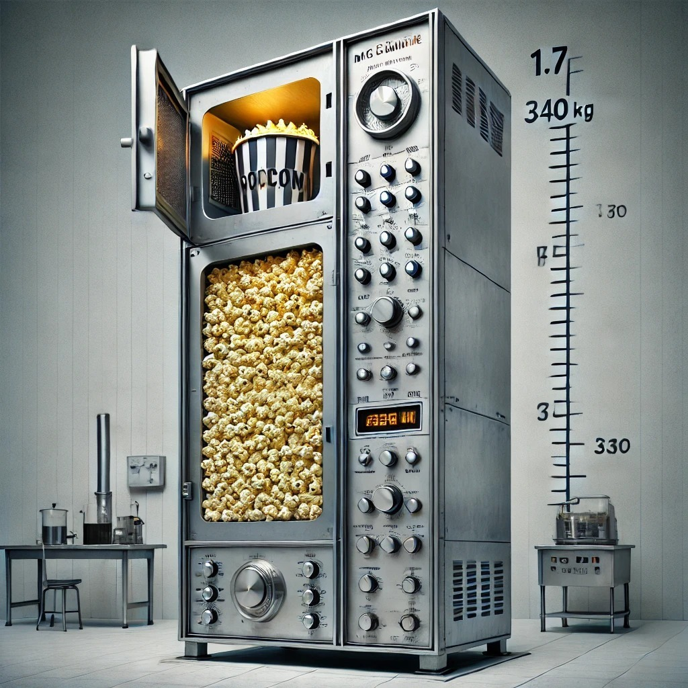
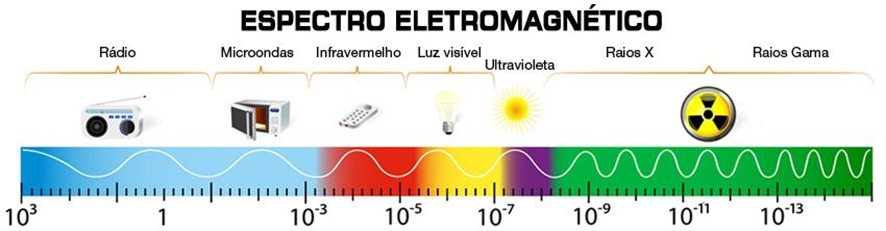
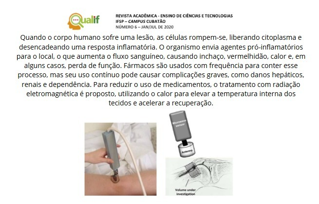

BIOGRAFIA DE PERCY SPENCER
Percy Spencer foi um engenheiro eletricista que nasceu em 1894 no estado de Maine, nos Estados Unidos. Ele abandonou a escola aos 12 anos para trabalhar em uma fábrica de algodão e, aos 18 anos, ingressou na Marinha dos EUA como operador de rádio. Com a ajuda de livros didáticos, Spencer aprendeu física e cálculo por conta própria. Após ser dispensado da Marinha, começou a trabalhar na Raytheon, onde foi responsável pela produção de uma grande quantidade de equipamentos de radar. Por suas contribuições, ele recebeu o Prêmio de Serviço Público Distinto da Marinha dos EUA. Ele foi introduzido no Hall da Fama dos Inventores em 1999.
HISTÓRIA DO MICRO-ONDAS
Tudo começou na Segunda Guerra Mundial, na Raytheon, uma empresa que produzia magnetrons, componentes usados em radares. Spencer estava realizando experimentos com um novo tipo de tubo de vácuo, o qual gerava micro-ondas, utilizadas para detectar aeronaves inimigas. As micro-ondas emitidas pelos radares eram refletidas de volta pelas aeronaves, e o eco fornecia informações precisas sobre a localização, aproximação, direção e outros detalhes.
Durante um desses experimentos, Spencer notou que a barra de chocolate em seu bolso havia derretido devido ao calor gerado pelo tubo.
Com isso, Spencer começou a realizar diversos experimentos em que colocava alimentos dentro do tubo de magnétron e constatou que eles estouravam devido à pressão interna, notando que haviam sido cozinhados de dentro para fora. O primeiro alimento a ser produzido pelo micro-ondas foi um saco de pipoca.
O que resultou na primeira patente para uso das micro-ondas para efeitos culinários, em 1946. Após essa patente, conseguiu, um ano depois, em 1947, produzir e comercializar o primeiro forno micro-ondas da história. Este média 1,8 metros de altura, pesava 340 kg e custava cerca de 5.000 dólares.
FUNCIONAMENTO
Por aquecimento dialético:
O aquecimento dielétrico, que utiliza radiação de micro-ondas, continua sendo empregado em radares e sistemas de radiogoniometria, especialmente em navios e aeronaves. No aquecimento de alimentos, as micro-ondas eletromagnéticas fazem com que moléculas polares, como as de água, vibrem, gerando calor. Essas moléculas absorvem energia do campo elétrico gerado pelas ondas e, ao cessar a radiação, essa energia é liberada na forma de calor, aquecendo o alimento. A presença de água é essencial para o processo, o que explica por que alimentos muito secos não aquecem bem. Moléculas apolares ou cristalinas, como as de porcelana, não absorvem eficientemente as micro-ondas.
Por condução iônica:
O aquecimento por condução iônica ocorre quando há íons dissolvidos no alimento. Por exemplo, na água pura, há poucos íons devido à sua dissociação, mas ao adicionar sal (NaCl), os íons de sódio (Na+) e cloro (Cl-) se dissociam. A água com sal aquece mais que a água pura, pois o campo eletromagnético das micro-ondas faz com que esses íons migrem, gerando calor por fricção.
CARACTERÍSTICAS DAS MICRO-ONDAS
As micro-ondas tem seu comprimento em torno de 3. 105 nm e 3. 108 nm, sua frequência na faixa de 103 a 104 MHz. Entretanto, uma de suas características é a capacidade de fazer migração de íons e rotação de dipolos. Em síntese, a frequência dos fornos micro-ondas é de, aproximadamente, 2,45 GHz.
APLICAÇÃO NA MEDICINA
SIMULAÇÃO DE UM MICRO-ONDAS
Acessar SimulaçãoExplicação da Simulação
A simulação serve para mostrar visualmente como as ondas de micro-ondas funcionam dentro de um forno micro-ondas, explicando o processo de aquecimento dos alimentos. Ela permite que você interaja com os controles do micro-ondas, ajustando a potência e o tempo, para ver como esses ajustes influenciam o comportamento das ondas. Isso ajuda a entender:
- Como as micro-ondas aquecem os alimentos: Ao ver as ondas se movendo dentro do visor.
- A influência da potência: Aumentar ou diminuir a potência mostra como isso afeta a intensidade das ondas.
- A importância do tempo: Ver o tempo diminuir e as ondas pararem quando o ciclo termina ilustra o processo de aquecimento completo.
Em suma, a simulação é uma ferramenta educativa e interativa para compreender o funcionamento de um micro-ondas. Você pode acessar a simulação através do link acima para experimentar como tudo isso funciona em tempo real.